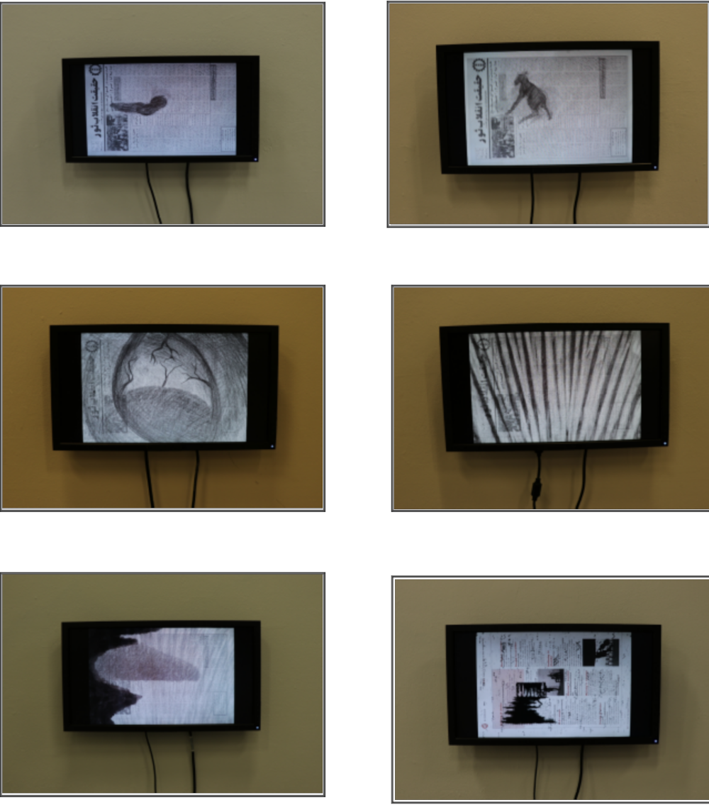
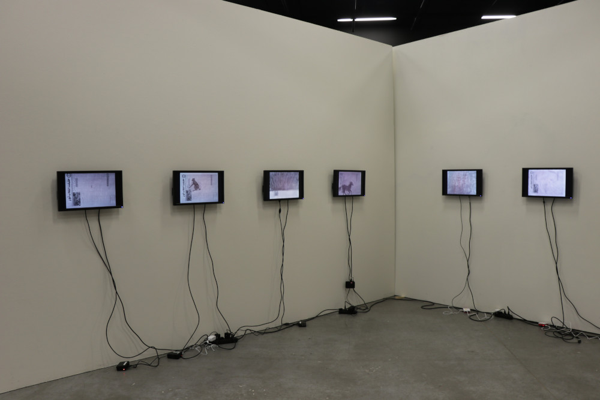

The essay is crafted to revolve around my work, its relation with magazines/ newspapers, and the ideas presented by Graham Dan in his writing "Magazine Advertisement." Although the primary focus of the essay is on the use of newspapers/magazines in art as a medium, rather than their informational aspect, as discussed by Graham Dan in his writing. The intention is to highlight how individuals can utilize simple words and lines on paper—the paper itself—to challenge a wide range of matters, pitting subjects against each other or challenging the mental abilities of the human race to recognize and consider the information they are reading. Additionally, Graham Dan discussed the inner topics shaping the columns inside magazines, but with my survival work, I aimed to address the outer layers of magazines/ newspapers—the clothing part.
Creating a conceptual assortment for awareness about a country, province, or city—collecting societal intelligence and gaining knowledge about social structure, local infrastructure, political views, market trends, products, job opportunities, selling unwanted items, crises, and more. In essence, it is a means for readers to understand how the system, regulations, and structures work in a particular dimension. Referring to local newspapers or magazines is not solely for information purposes; they can act as a mirror reflecting the complexity of the human world and its network structures.
Moreover, human societies use this medium for advertising and marketing various aspects such as local infrastructure, business schemes or scams, cultural integration, social gatherings, sports events, economic schemes, and many other versatile items. It's not an exaggeration to view this theory as a weapon of mass distraction that can be directed in any direction for any purpose. This aligns with Graham Dan's exploration in his work "Homes for America," where he discusses how business, corporate companies, and the political face of America guided the working class category of American society to invest in the housing sector. The essay further delves into the spiderweb-like mortgage, a network of loan advertisements designed to attract individuals with irresistible offers. The concept of a door to success, accessible to anyone, is explored with its procedures and dreams-come-true advertisements, pre-planned schemes. It adds a layer of amusement when individuals who typically critique such doubtful advertisements find themselves participating in similar scams within human communities.
It is astonishing to witness how well-designed and meticulously prepared advertisements by policymakers, companies, and corporations not only flawlessly fulfill their intended purposes but also spark new ideas for the expansion of such schemes. Graham Dan, in his writing on Magazine Advertisements, articulates this phenomenon: “Each class of magazines (TIME, LIFE, BOY'S LIFE, SPORTS ILLUSTRATED, FILM CULTURE, ARTFORUM) appears to cover a defined field, its form assuming a category of readership who are identified with the 'line' of its advertisers whose ads support and uphold the magazine's existence/ 'image'”.
As mentioned earlier, magazines/newspapers can serve as a mirror reflecting the knowledge of a society. For traders, politicians, and businesses, the goal is to market words and products to the readers. Graham Dan's writing highlights how magazine advertising columns are strategically designed to promote housing schemes and products to American society. On one hand, magazines/newspapers are crafted to serve as historical storytellers, whispering the sweet song of prosperity to the reader. On the other hand, they function as the frontline of marketing, selling products, words, concepts, knowledge, culture, landscapes, tours, histories, and hopes for development. Sometimes, it is just imagination, but the clear purpose is to generate profit for the targeted audience. Here, another insight from Graham Dan's writing resonates: “People read and identify with a magazine a prefabricated system of belief and buy (relate to the advertising) the product or 'image' it sells.” It is a reality that humans often lean towards shortcuts in their pursuit of a better life, rather than conducting thorough research on the authenticity of information and its achievability. For those inclined towards quick success, vibrant, enticing scams can work like a magnet, resembling a sweet shop, yet it might also be a mouse trap. Nevertheless, it is not a lie that some theories only come to light over time.
The Survival,
(seven short animation movies 2019)
I cannot hide the fact that people and writers around the world have used magazines/newspapers as a medium to target, reach, and inform the audience regarding their art concepts, artwork, and exhibitions. The procedures for using newspaper/magazine media can vary, but the intention is to reach every person who reads. Some individual artists, galleries, or museums use the print process to directly print on newspapers/magazines. Some artists incorporate magazine or newspaper cutouts in their collages, while others distribute magazines/newspapers. Personally, I, like some, use magazines/newspapers as a medium to work on.
Emerging from the depths of disappointment and desperation, an artist can only illustrate the situation of survival, as shown in 7 animated short movies. These movies depict images of a subject presented as a horse, aiming to jump from one society to another, consciously or unconsciously, with the purpose of survival. The jump is not empty, and the subject is not fruitless; it's akin to a winter-hugged tree with deep roots and hidden blooms.

Here, I would like to reference Graham Dan's writing once more: “Each class of magazines (TIME, LIFE, BOY'S LIFE, SPORTS ILLUSTRATED, FILM CULTURE, ARTFORUM).” In his writing, he emphasized the marketing value of newspapers/magazines, but in my work "The Survival" (7 animated short movies), there is an additional angle to the presentation of newspapers/magazines beyond marketing.
This magazine/newspaper represents the social and cultural thoughts of society, a contemporary approach, but at the same time, it holds a trajectory thought beyond words, topics, and marketing sales. A newspaper/magazine serves as the representation of culture and its reflections, with both of these aspects visible in the local magazines/newspapers of every regional district and country.
In "The Survival," I utilized the face of a newspaper/magazine page to showcase the challenges of the human-created environment, with the subject (horse) taking the stage as it enters the world, its place of birth. This page of the newspaper/magazine belongs to the environment where the subject first saw the daylight.
Continuing the narrative, in the second animation, the subject starts to take its first baby steps in the same environment. It's a challenging endeavor, but like every other baby attempting to stand in this world, the subject succeeds. In the subsequent frames, the subject utilizes the environment to evolve, learn, and become a strong entity in that society. However, due to an approaching black wind from the east, the subject is thrown out and forced to escape, jumping to the second environment (moving from one page of the newspaper to the second page). This new environment is unfamiliar to the subject (horse).
Here, we observe the subject emerging without any predetermined goal or direction, carried by the winds to the second environment. After landing, the subject becomes incompatible with this environment. Consequently, the subject slowly observes and witnesses how it is losing its sense of existence. Ultimately, the subject loses its personality and is washed away under the heavy rain of thoughts.
In conclusion, a newspaper/magazine can represent a social environment with all its hidden jewels. This jewel might be adorned with precious stones or could be just a sea bedrock; only the witness (reader) can testify to the crime. However, for those who aim to exhibit and sell this jewel or its idea under the name of advertisement, the reader may perceive those advertisements as a mouse trap—an undeniable, irresistibly fabricated splendor that demands exorbitant prices.
Read More
 .